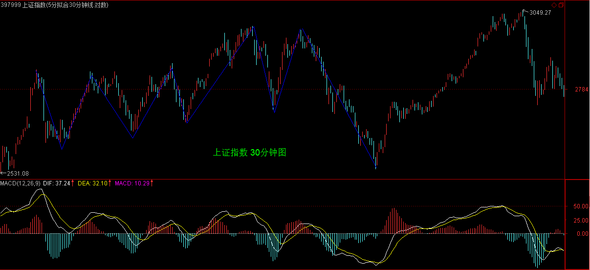

(2007-03-07 15:09:54)
面首，一种职业；怨男，一种自虐。面首常有，怨男更常有。怨男，无分贵贱，无关学问。李后主，一国之君，人生长恨水长东地成就一代怨词，也算怨得有点声色；【韶山映山红】李煜《相见欢》“林花谢了春红，太匆匆，无奈朝来寒雨晚来风。胭脂泪，相留醉，几时重？自是人生长恨水长东。”】以后主为隔代知己的王某，一头扑入不能长东只能长恨的死水里，比起清华园后来那些因阴阳失调而成就的千万怨男，也算怨得有点动静。【韶山映山红】清华大学国学研究院教授王国维1927年6月2日投颐和园昆明湖鱼藻轩自沉。古今之成大事业、大学问者，必经过三种之境界。“昨夜西风凋碧树。独上高楼，望尽天涯路。”“衣带渐宽终不悔，为伊消得人憔悴。”“众里寻他千百度，蓦然回首，那人却在，灯火阑珊处。”】
清华男的脑子多不好使，在逻辑与数据的迷宫中迷失自我，是否与此阴阳失调相关且不论，但北大男如面首，清华男如怨男，却是不争的事实。宁要面首，莫要怨男，这也是北大比清华出色的地方。站在消费者的角度，面首总比怨男可爱得多。【韶山映山红】燕园的总是喜欢贬损清华园。】
最不可爱的，当然就是怨男里的面首或面首中的怨男。那一片记录着中国人耻辱的残园附近的两种男人，就如同股市中的失败男人一样。股市中的失败男人，只有两种，面首与怨男，当然也就包括其中最不可爱的两者交集。【韶山映山红】面首与怨男都是“股市中的失败男人”。】
【韶山映山红】若禅精舍（陈秋明）：
面首，被股票消费者，心思细腻随着价格的涨跌而扑通扑通，一颗心被走势牵着走。怨男，不能直面现实者，在佛学上，过去心不可得、现在心不可得、未来心不可得，而在股票上，只有当下才是值得去得的玩意，离开当下什么都不是。过去的已经过去，成为历史，无可更改，沉浸在过去的都属于怨男一属。
面对上涨，那是市场给糖吃，那当然吃了再说，难道留着过年？当下没有反应，过后就少吃一口，甚至直接吃面。就好像这两天的上涨，无论之前是否预判到这次上涨，但既然出现力度比下跌更大的上涨，那当然吃了再说。其实技术分析之类的都是废话，当下这口吃到了就是英雄，吃不到就是废物。吃不到的废物，下一口又能吃到了，自然也就不废物了，这里倒没有任何轻视别人的意思，每一个操作者，都会遇到当废物的时候。
又被消费，又不能直面现实，那是废物中的废物，不提了。
】
面首，被股票所消费者，被股票所玩弄者，被股票忽悠着从阳亢到阳痿间不断晃悠者。非怨男的面首有一好处，就算不太精液了也还很敬业，到处想方设法也要找点这鞭那鞭嚼嚼又可以继续傻忽忽、乐呵呵地敬业了。【韶山映山红】所谓面首者，屡败屡战，股民亏成股东是也。】
怨男，有两种，一种是当面首时被用废的，能用的只剩下嘴了，或者去当当股评卖卖假阳具去骗骗人，或者每天对着股市这镜子顾影自怜，或者就编编故事对着往昔的梦境再梦里阳亢一把；另一种是拍AV的、说评书的、当狗崽的、玩裸聊的，总之，都不是能玩真的，都是些企图用口眼就能制造快感的发育不良者。要快感就玩真的，真刀真枪来，总是当医疗器械的免费宣传者那算什么事？【韶山映山红】所谓怨男者，股东也做不好，“能用的只剩下嘴了”。那些以专家、老师自居的都来撒泡尿照照。】
【韶山映山红】若禅精舍（陈秋明）：
市面上消费缠论的同样数不胜数，什么强三买、分型停顿、井论，林林总总花样百出。但道理就是那道理，理论掰扯的再多，当下没有反应都是白搭。曾经在微博里的直播，很大程度上是为了让坚定一些人学习的信心，缠论值得你去花费精力和时间钻研。同时也给出对那些诋毁缠论的人最好的反击，微博里任何试图打耳光的，最终都被吊打。对于走势的当下立断，超过所有花样百出的曲解与歪解。
】
无论面首或怨男，最大的共同点就是喜欢被玩，当一种面首或怨男的密码被输入后，这面首或怨男的程序就自动运行。其人，不过是傀儡而已，但竟然也乐在其中，也算天下之奇事。【韶山映山红】“被玩”，所以“傀儡”。】
不摆脱这各种情绪操控的傀儡命运，就无人可言，但更可怕的的是，很多人却深陷其中而不能自拔，甚至不能自知。【韶山映山红】不关注走势，却被“各种情绪操控”。】
很多人，从一开始就自闭其路，一开始就是死路一条。例如，自以为高明地把股市当赌场，这样，一双赌眼看股市，怎么闹都是一条赌命，其命运就由其最开始的所谓高明所决定了。“闻见学行”，有如此闻，而有如此见，复有如此学，终有如此行，如此股市就以各人自渎的想象成为众多股市参与者的坟墓。【韶山映山红】被思维模式锁死。】
正闻、正见、正学、正行，无此四正，要在股市里终有成就，无有是处。正，不是正确的意思，所谓正确，不过是名言之争辩。正，是正是，是当下，只有当下，才是正是，才是这个。要当下闻、当下见、当下学、当下行，才是正闻、正见、正学、正行。
而对于股市来说，只有走势是当下的，离开走势，一切都与当下无关。一切“闻见学行”，只能依走势而“闻见学行”，离开此，都是瞎闹。不符合当下走势的，上帝说正确也白搭。【韶山映山红】实事求是。】
由此，入股市者，首先就要把所有面首、怨男的情绪、基因抛掉，化掉，如何能办到？也离不开当下，离不开在当下的走势中磨练。
当下的走势就是一切，一切股市的秘密就在其中。这秘密，是大道，没有任何的遮掩，对任何人都一视同仁、明明白白地彰显，你还向外求什么？而无数的人，还是要争着玩骑驴找驴的游戏。
【韶山映山红】若禅精舍（陈秋明）：
名言之争辩必有立场，何况脱离现实的任何理论都是废物的废话。当下直观，清净本来，此心不动，随境而转，就是在股市里的不二法门。这和前面的零向量的意思是相同的，但不仅于此。当下的闻见学行，落脚处同样也在当下，无数书蠹沉迷在理论里面，对走势视而不见，却不知最好的理论就是走势本身，就是操作者自身，其他任何因素都是助力。
】
在股市中，钱的大小根本不重要，亏损是按百分比的，所有的钱，无论你是从哪里涨起来的，在任何一个位置，变成0的几率是一样的。这个几率是当下存在的，任何人、任何时候都不可能摆脱，这是“不患”的。
当下的走势，就如同一把飞速滚动的屠刀，任何与之相反的，都在屠杀之列，而与之顺着的，那被屠的血就成了最好的盛宴。也就是说，一旦你的操作，陷入一种与当下走势相反的状态，任何该种状态的延续就意味着死亡，一旦进入这种状态，唯一正确的选择就是离开。【韶山映山红】随波逐流。】
当然，走势是千变万化而有级别性的，任何的当下，并不就意味着1秒种的变化，而是根据你的资金以及承受所可能的操作级别来决定的。一直所说的操作级别，就是针对此而说。例如，你根据资金等情况，决定自己的操作级别是30分钟的，那30分钟所有可能发生的走势都在你的计算之中，一旦你已有的操作出现与30分钟实际当下走势相反的情况，那么就意味着你将进入了一个30分钟级别的屠杀机器里。这种情况下，只有一种选择，就是用最快的时间退出。【韶山映山红】见风使舵。】
注意，这不是止蚀，而是一种野兽般的反应。走势如同森林，野兽在其中有着天生般的对危险的直觉，这种危险的直觉总是在危险没发生之前，而野兽更伟大的本事在于，一旦危险过去，新的觅食又将开始，原来的危险过去就过去了，不会有任何心理的阴影，只是让对危险的知觉更加强大。【韶山映山红】沉没成本。】
没有任何走势是值得恐惧的，如果你还对任何走势有所恐惧、有所惊喜，那么，你还是面首、怨男级别的，那就继续在当下的走势中磨练，让这一切恐惧、惊喜灰飞湮灭。这里，只需要正闻、正见、正学、正行，而不要面首与怨男，即使面首比怨男要可爱一丁点。【韶山映山红】不以物喜，不以己悲。】
【韶山映山红】若禅精舍（陈秋明）：
危险，是可以感知的。事实上如果盯盘时间足够长，在指数的走势形态与盘中各板块的表现出现苗头的时候马上就可以感觉到不对劲，这可以说是直觉，因为并不好准确的去量化，只是经历的多了的一种本能反应。舒马赫有次比赛，在要过一个急弯的时候，急弯的前面有辆车出现意外翻车，这个翻车的场景舒马赫是看不到的，但他就是在转弯之前本能的停了下来，避免了一场追尾事故的发生。在那个时候，他并清楚具体发生了什么，只是本能的感觉不对劲，整个赛道与正常情况不一样，可能是观众发出的声音不同或者其他什么。这就是经验所带来的直觉，不知道哪里不对劲，但一定有不一样的事情发生。
】
大盘没什么可说的，上下午分别在2888、2915下震荡，十分标准。
注意，来这里别把本ID当股评，现在是指导各位根据当下的情况培养自己的当下判断。如果真有心学习的，今天盘中1、5、15、30、60分钟等级别之间的综合关系，以及相应的判断，就有一个最直接的感觉了，这才是真工夫。
大盘只要不有效站稳2915，最终形成第三类买点，则下面这中枢依然不能摆脱。
【韶山映山红】“不有效站稳2915，最终形成第三类买点”，就还是“下面这中枢”的延伸震荡。】
【韶山映山红】30分钟中枢（递归的5分钟中枢）盘整背驰，之后向上。线段类上涨趋势背驰，将有1分钟线段中枢的震荡。】
说得简单点，现在大盘无非两种盘整方式，一种就在2915附近重新回跌，甚至继续破底形成之字型，【韶山映山红】“在2915附近重新回跌”，就是前面说的“不有效站稳2915”。前面已经有过一次2723点位的新低，中枢离开段盘整背驰，然后反弹，有望转折的。回跌就意味着转折没有了，就还是“下面这中枢”的延伸震荡。“甚至”回跌再一次下破中枢，“继续破底”形成新的新低。之前的新低不明显，震荡之中的低点都差不多，明显的新低就会“形成之字型”盘整，如下图一个更小级别盘整的黄色结构所示。】
【韶山映山红】下图黄色划分的形态就是缠师说的“典型的之字型”。】
一种就是先上3000，然后再回拉形成平台型，【韶山映山红】线段类上涨趋势背驰，然后更大级别盘整。】平台型，就类似于箱体震荡，就没有明显的下跌结构了。】
这些都不用考虑，当下就知道了。
2007-3-7 15:12
[匿名] 悠悠悠哉 2007-03-07 15:13:15
a+A+b+B+c 中 A B是中枢？
那a＋A＋b 和 b＋B＋c 是不是中枢那？？？
===
前面是，后面不是。【韶山映山红】第一行的是前面，第二行的是后面。中枢和走势类型的区别。A、B是中枢。a＋A＋b和b＋B＋c不是中枢。】
2007-3-7 15:16
对不起，今天不能聊了，马上要出门，晚上如果早回来再说，有问题先留下。
先下，再见。
2007-3-7 15:19
(2007-03-08 15:27:19)
子曰：十室之邑，必有忠信如丘者焉，不如丘之好学也。
杨伯峻：孔子说：“就是十户人家的地方，一定有像我这样又忠心又信实的人，只是赶不上我的喜欢学问罢了。”
钱穆：先生说：“十家的小邑，其中必有像我般资质忠信的人，但不能像我般好学啊。”
李泽厚：孔子说：“十户人家的小地方，一定也有像我这样忠实可靠的人，只是不像我这么喜欢学习罢了。”
详解：
“室”，家族；“邑”，本义“国”；“必”，倘若；“如”，遵从；“丘”，孔子自称；“焉”，于此；“不如”，不若。“十室之邑”，由所有家族构成的国家，人而家而国，修身、齐家、治国，进而才能平天下。“十”，《说文》，十是数之具，包括东西南北中央，极言其大，也就是囊括所有的意思。
“必有忠信如丘者焉”，即“必有如丘之忠信者焉”，于“十室之邑”倘若具有遵从我的“忠信”标准；“不如丘之好学也”，即“不如有如丘之好学者焉也”的省略，比不上于“十室之邑”具有遵从我的“好学”标准。
这两句话表明了孔子的一种态度、也是一种深深的忧虑，就是一个国家不能光把“忠信”当成标准，而不把“好学”当成标准，这样的国家并不能算是行“圣人之道”。
而事实上，以后的国家，绝大多数都是光以“忠信”为标准，从希特勒到小布什，从军国主义到民主主义，无一不是以所谓的“忠信”为标准，归根结底就是愚民。
孔子所理解的“忠信”是以“好学”为基础的，是人人都具有对现实究底穷源的智慧为基础的，没有“好学”，“忠信”标准只能是愚民把戏。
即使这个所谓的“忠信”标准是按孔子的标准而来，如果没有“好学”为基础，最终都要变质，更不用说那些所谓的“忠信”不过是各种愚民的幌子。
上一章，孔子彰显“好学”的三大标准，是从“内圣”角度谈论的；而本章，就是从“外王”的角度谈论“好学”的重要。
内圣外王都离不开“好学”，必须对欲望不贪求从而满足，对生存的环境不贪求从而安身，通过当下的事情去印证，使得理论、言论顺应当下的实际，对现实究底穷源，使现实行“圣人之道”而在现实中成就之。
而所谓的“忠信”，如果没有“好学”的标准，必然就是凭空定出一些法则、标准、道德，通过愚民式方式来灌输，进而控制民众，就如同纳粹、武士道、反恐，有哪个不强调“忠信”？又有哪个不是以所谓的“忠信”为迷药去制造炮灰？
孔子，在两千多年前，已经把其后的、所有以国家为名义的“忠信”丑剧扒了个精光。
缠中说禅白话直译
子曰：十室之邑，必有忠信如丘者焉，不如丘之好学也。
孔子说：所有国家，倘若有遵从我的“忠信”标准的在其中，不若有遵从我的“好学”标准的在其中。
（待续）
附录：
【韶山映山红】2007-3-8 15:30。】
昨天尾盘与今天早盘构成的5分钟回试，【韶山映山红】昨天尾盘只说这里是震荡，还没有提及三买。今天早盘的下跌形成了a+A+b的形态，才最终确认构成5分钟回试。如果没有今天早盘的下跌就直接拉上去，那样就只是一个回踩中枢。】
没有重新跌回2858原30分钟中枢，就构成完美的第三类买点，其后的走势都很规范。【韶山映山红】线段类上涨趋势离开，盘整回踩形成三买。这里成为三买是因为当时的走势划分，形成了向下的盘整走势。按照后来的线段中枢划分就不一样了。】2858是3月5日高点。“原30分钟中枢”是下图5分钟递归中枢。】
2915点的压力在尾盘突破，但还需要确认。【韶山映山红】次级别不跌回就确认。】
从纯技术的角度，现在依然存在重新跌回这5分钟中枢，从而扩展成新的30分钟中枢的可能，所以2915是不能有效跌破的，否则将扩展出新的30分钟中枢，这样走势的演化就复杂了。【韶山映山红】“这5分钟中枢”是指2911的向下盘整。】
各股没什么可说的，还是板块轮动，每个板块的时间都不长，所以千万不能追高，一定要在买点买。对于散户来说，没必要参与板块的调整。不过，也不能太短，要把握其度，例如5分钟上还是主升，见一个1分钟以下的背驰就跑，这样大的利润可能都吃不到了，所以必须综合地判断，这是一个艰苦的磨练过程，必须不断交易而达到技术的完美。
最近现实中，正构建一个传媒平台，和汉奸打仗，必须对舆论有所引导，这些事情是必须干的。【韶山映山红】《基金分析》杂志。】
昨天尾盘与今天早盘构成的5分钟回试，没有重新跌回2958原30分钟中枢，【韶山映山红】笔误，是2858。】就构成完美的第三类买点，其后的走势都很规范。2915点的压力在尾盘突破，但还需要确认。从纯技术的角度，现在依然存在重新跌回这5分钟中枢，从而扩展成新的30分钟中枢的可能，所以2915是不能有效跌破的，否则将扩展出新的30分钟中枢，这样走势的演化就复杂了。
各股没什么可说的，还是板块轮动，每个板块的时间都不长，所以千万不能追高，一定要在买点买。对于散户来说，没必要参与板块的调整。不过，也不能太短，要把握其度，例如5分钟上还是主升，见一个1分钟以下的背驰就跑，这样大的利润可能都吃不到了，所以必须综合地判断，这是一个艰苦的磨练过程，必须不断交易而达到技术的完美。
最近现实中，正构建一个传媒平台，和汉奸打仗，必须对舆论有所引导，这些事情是必须干的。
2007-3-8 15:30
[匿名] 12dfdf 2007-3-8 15:29
1、“注意，次级别的前三个走势类型都是完成的才构成该级别的缠中说禅走势中枢，完成的走势类型，在次级别图上是很明显的，根本就不用着再看次级别下面级别的图了。”
――――――
所以请教缠主完成的走势类型有哪些特征，可以很明显地看出来，而不用看次级别的图了？
==
不谈级别，那什么都别谈了，因为只能是瞎谈。
2、“缠中说禅技术分析基本原理二”：任何级别任何完成的走势类型，必然包含一个以上的缠中说禅走势中枢。
“缠中说禅走势分解定理二“：任何级别的任何走势类型，都至少由三段以上次级别走势类型构成。
―――――――
请问缠主：“基本原理二”中“包含一个以上”应该理解成“包含一个以上（包括一个）”吧。“至少由三段以上”应该理解成“至少由三段以上（包括三段）”吧。
==
至少一个。
2007-3-8 15:41
[匿名] 淡定 2007-03-08 15:41:18
楼主,节日快乐!!!
==
节日快乐
2007-3-8 15:42
[匿名] 草草 2007-03-08 15:42:22
老大：怎么样确认是第三买点啊，我今天也判断了两个关键位置：2871和2588，但到了2871回来的时候，总怕而次下探击穿，所以只买了一半的货，怎么样才能确认回调不破中枢高点？
==
看次级别内部走势。和上几次说离开力度不够的判断是一样的。

2007-3-8 15:45
[匿名] 满目山河 2007-03-08 15:45:36
传媒平台？是电视专栏还是？
==
不是，本ID不会抛头露脸的，台面上的事情还需要本ID干就太没意思了。
2007-3-8 15:49
缠中说禅 2007-03-08 15:51:01
【韶山映山红】这里显示缠师还有一条回复，应该就在这条回复之前。找不到了，所以对话也残缺了。】
[匿名] 插班生 2007-03-08 15:44:34
楼主，第三类是第一次下试就能确定了．
我还以为要两次呢，糊涂．
【韶山映山红】插班生说的第三类应该是第三类买卖点。原文经常说三段盘整结构的第三类买卖点，所以插班生说以为要两次下试，谁知道这里是第一次下试就能确定了。缠师前面说过的“昨天尾盘与今天早盘构成的5分钟回试”是下图的黄色线结构，相当于下试+盘整+下试，还是两次下试，所以缠师这里回答“昨天尾盘那次不算？”】
==
昨天尾盘那次不算？ 这是典型的之字型。【韶山映山红】这里是原文对“之字型”唯一的一次描述。中枢的形态，三角形、奔走型、之字型、平台型。可以做个专题。以后研究。】

2007-3-8 15:51
[匿名] 三藏 2007-03-08 15:31:49
老大，金融股什么时候动动啊？？
11.53买的民生银行，今天一天不死不活的
==
前两天不是动了？
现在是板块轮动，没必要连续拉抬一个板块，这样对修复人气没好处，也容易受到正面攻击。
所以一直强调，没必要追高，才能把握轮动节奏。动过的，等调整好了，自然又动了。
2007-3-8 15:57
[匿名] 后知后觉 2007-03-08 15:56:19
禅主，节日快乐！全体女性用品（－－男同学）祝禅主和女同学节日快乐！！
如果跌回5分钟中枢，就形成了30分钟第三段了，就又要看中枢走完的背驰去向了，是这样吗？
==
就按中枢里的操作方法，前几天那震荡不是演示过好几次了？教你炒股票33：走势的多义性
2007-3-8 15:59
[匿名] 三九 2007-03-08 15:56:07
"一个30分钟的a+A+b+B+c的向上走势，你不可能在A走出来后就说一定有B，这样等于是在预测，等于假设一种神秘的力量在确保B的必然存在，而这是不可能的。那么，怎么知道b段里走还是不走？这很简单，这不需要预测，因为b段是否走，不是由你的喜好决定的，而是由b段当下的走势决定的。如果b段和a段相比，出现明显的背驰，那就意味着要走，否则，就不走。"
LZ好,我记得你前面说过背驰必须出现在第二个中枢之后,这和上面的说法是否有矛盾?
==
这有什么矛盾？
第一个中枢之后的是盘整背驰。【韶山映山红】a+A+b+B+c背驰和a+A+b盘整背驰的区别。】
2007-3-8 16:00
[匿名] 黄土高坡的白杨 2007-03-08 15:59:45
十室之邑。“十”，《说文》，十是数之具，包括东西南北中央，极言其大，也就是囊括所有的意思。
李泽厚：孔子说：“十户人家的小地方，一定也有像我这样忠实可靠的人，只是不像我这么喜欢学习罢了。”
平时理解的“十”，以为就是小地方的意思。看来完全弄反了。神仙姐姐精力真实旺盛，将这些刨根问底，搞得很清楚啊。
==
一般说少的，都用三之类的，例如，楚虽三户，古代对数字的用法很仔细的，不是随便就用一个十，在古代，数字是有神圣性的。
2007-3-8 16:02
[匿名] 盼解惑！谢谢 2007-03-08 16:00:50
引用：“昨天尾盘与今天早盘构成的5分钟回试”
分析：我认为这是个2个一分钟中枢由于波动区间重叠而形成的5分钟的盘整走势。
问题：请问缠师，这个盘整走势的背弛我怎么看不明白啊，今早的下跌一段力度明显大于昨天刚开始下跌的力度，怎么也转折了呢？
==
从a+B+b的角度，【韶山映山红】这里是第一次写成“a+B+b”。是笔误？还是意味着与“a+A+b”有什么不同？★以后研究。】是算柱子的面积而不是长度的最长处，看5分钟图就更明显了。【韶山映山红】走势类型分析的角度，这里是a+A+b结构。也就是说，是一个向下盘整的走势类型。】

从纯中枢的角度，5分钟中枢，昨天尾盘就形成，后面的拉以及今早的跳都是围绕的震荡。【韶山映山红】中枢分析的角度，2911就开始三段回踩中枢了。】
2007-3-8 16:10
[匿名] CCTV 2007-03-08 15:43:49
妹子，本周超级成功，每天换两股飘，连续10次操作全部成功，上面都有记录，都是妹子的理论厉害，谢谢啦。
==
不能太短，如果主升段都错过了，这种换股没意义。
2007-3-8 16:13
缠中说禅 2007-03-08 15:30:24
昨天尾盘与今天早盘构成的5分钟回试，没有重新跌回2958原30分钟中枢，就构成完美的第三类买点，其后的走势都很规范。2915点的压力在尾盘突破，但还需要确认。从纯技术的角度，现在依然存在重新跌回这5分钟中枢，从而扩展成新的30分钟中枢的可能，所以2915是不能有效跌破的，否则将扩展出新的30分钟中枢，这样走势的演化就复杂了。
各股没什么可说的，还是板块轮动，每个板块的时间都不长，所以千万不能追高，一定要在买点买。对于散户来说，没必要参与板块的调整。不过，也不能太短，要把握其度，例如5分钟上还是主升，见一个1分钟以下的背驰就跑，这样大的利润可能都吃不到了，所以必须综合地判断，这是一个艰苦的磨练过程，必须不断交易而达到技术的完美。
最近现实中，正构建一个传媒平台，和汉奸打仗，必须对舆论有所引导，这些事情是必须干的。
==
对不起，有一个笔误，是2858
2007-3-8 16:15
[匿名] L8453 2007-03-08 15:34:03
盘啊盘，被晕了一天。
==
走势很规范，晕是磨练不够，所以要不断在当下磨练，光学概念没用的。
2007-3-8 16:21
2007-03-08 15:38:10
老大，关于您回复的大盘1月9日到2月6日是日线中枢，这么说是不是可以认为5分级别的9段就构成了日线级别的中枢。也就是说次次级别当延伸了6段，加上原来次次级别的中枢三段，这时就构成了本级中枢。
是这样吗？
==
是1月4日开始，正好9段5分钟走势。

2007-3-8 16:23
[匿名] 乱麻 2007-03-08 16:22:23
缠主是中国人，理由如下：
1、痛恨汉奸；
2、喜欢研究《论语》；
3、文言文说的比白话文好，缠主的白话文实在拗口，基本上搞不清在说什么。
4、我注意到一个现象，国外一些技术教程看上去浅显易懂，把很复杂的道理说得简单明白，国内专家的文章把简单明白的道理说得云山雾罩，生怕人家说他不专业。从这点来看，缠主可确定为中国国籍。
呵呵，开个玩笑，得罪了莫怪！
==
国外的所有技术理论本ID都研究过，和本ID的根本不是一个路子，这是一个公理化系统，如果你是文科生，那好好换一个数学脑子来，如果已经是理科生，那回学校重读。【韶山映山红】缠师研究过国外所有的技术理论。】
理论是最基础的，关键是实践中的当下，这是另一个层次的东西，鬼佬的理论，根本达不到这个层次。
2007-3-8 16:26
[匿名] 六同 2007-03-08 15:43:49
想听LZ的B股研判...谢谢!
==
和A股大同小异，就没必要专门说了。
2007-3-8 16:27
好，四点半，必须走了，最近很忙，先下，再见。
2007-3-8 16:29
[匿名] 缠文观止 2007-03-08 15:34:28
楼主好！关于走势和中枢的级别问题，经反复阅读原文和大家讨论，有以下结论，请楼主指正：
同级别的三个走势的连接，比如“趋势＋盘整＋趋势”，盘整的中枢级别高于趋势的中枢级别。为方便清晰起见，不用次级别等概念，用实际级别举例来说如下：
“日线趋势＋日线盘整＋日线趋势”组合中，日线趋势至少包含两个“日线中枢”，而日线盘整只包含一个“周线中枢”。进一步推论有日线盘整至少包含三个“日线中枢”。
根据以上结论，按中枢的定义，周线中枢的组合可以有：
“日线趋势＋日线反趋势＋日线趋势”，
“日线趋势＋日线盘整＋日线反趋势”，
“日线趋势＋日线盘整＋日线趋势”，
“日线盘整＋日线盘整＋日线盘整”，
。。。。。。
等等
但从周线级别角度看，上述组合如果是一个完成的次级走势的话，仅仅是一个日线盘整！这个组合中只包含了一个周线中枢！
其中“日线趋势＋日线盘整＋日线趋势”组合，站在周线角度看如果是一个未完成的走势的话，则可能是周线趋势的一部分，也可能是周线盘整中的一段。
所以日线走势组合连接的含义，只有在周线级角度看才有意义。站在两个级别角度分别看，则有多义性。
以上走势组合只考虑了同级走势组合连接的情况。对于不同级别走势的连接情况怎么分析，还请楼主指教。
==
临走回答一下。
你不能把两种不搭界的看法混在一起。【韶山映山红】“两种不搭界的看法”是指走势类型分析和中枢分析。】
按中枢看，就严格按中枢的定义来，其后在中枢结束前的所有走势，都可以看成是围绕中枢的震荡过程。至于仔细的分类，以后会说到。
这个问题，上面回答，昨天开始的这个5分钟中枢时已经有所回答。
这个中枢，可以有两种看法，a+B+b，这样就是走势组合的看法，这样有一种判断。【韶山映山红】走势组合的看法，a+B+b，就是离开段对进入段的盘整背驰判断。】
【韶山映山红】这里是第二次写成“a+B+b”。是笔误？还是意味着与“a+A+b”有什么不同？★以后研究。】
而单纯从中枢看，前三段就是中枢，后面是震荡，这又是一种看法，这就用离开的力度来判断。【韶山映山红】中枢分析的看法，一开始回踩就视为中枢开始，然后看中枢的震荡延伸和第三类买卖点。】

两种方法如果都有同样的结论，那自然就是最准确的结论，这个区间套的方式是一样的。【韶山映山红】走势类型分析，a+A+b盘整背驰。中枢分析，中枢延伸中的向下离开段盘整背驰、返回中枢。】
具体以后课程都会说到，必须走了，再见。
2007-3-8 16:38
本课目录
教你炒股票34：宁当面首，莫成怨男《论语》详解：给所有曲解孔子的人（55）子曰：十室之邑，必有忠信如丘者焉，不如丘之好学也。